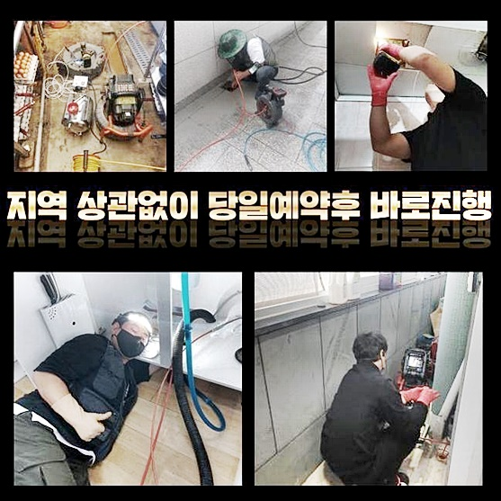
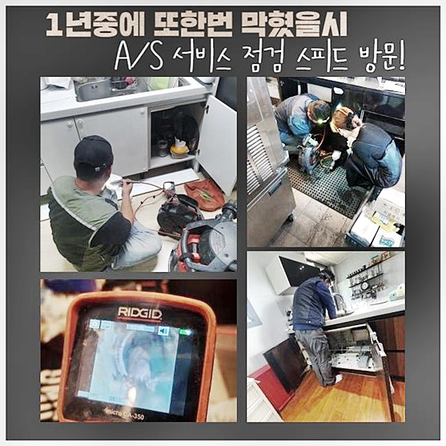
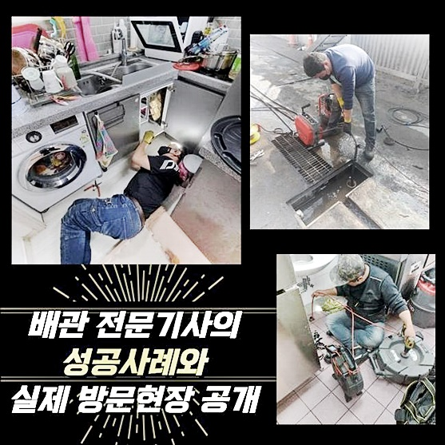
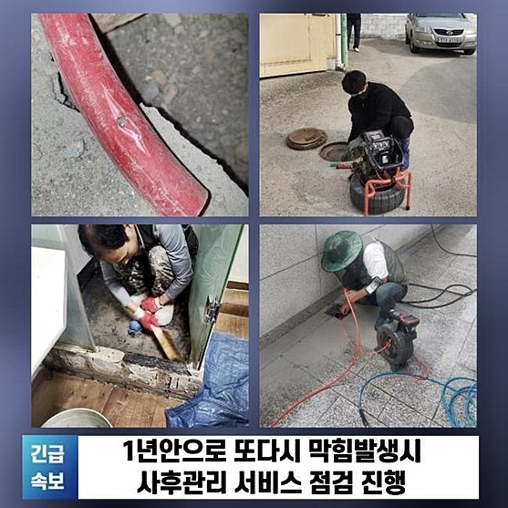
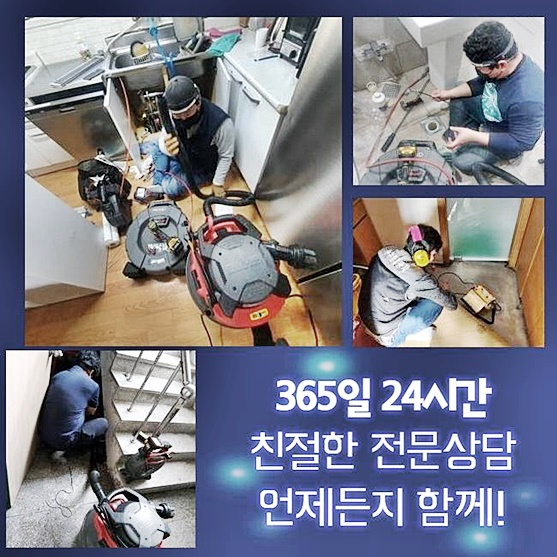
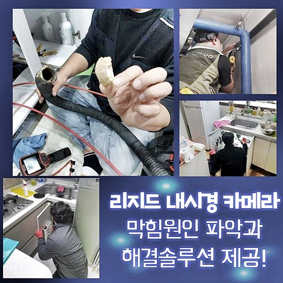

🏠 강서구 외발산동싱크대막힘 화곡본동 맨홀막힘 설비업체
용인시 처인구 배관막힘 전문 시공 후기

📋 작업 개요
- 위치: 용인시 처인구, 수원시 영통구, 화성시 동탄
- 서비스 유형: 배관막힘, 고압세척
- 작업 일시:
- 업체명: 하수구수사대 (010-5615-2118)
🔍 문제 상황
강서구 외발산동싱크대막힘 화곡본동 맨홀막힘 설비업체
배수가 수월하게 흐르지못하는 경우엔 하수시스템의 오류로 인해서 건물안의 가게들이나 주거지에도 반복되는 피해들을 전가시킵니다
이와같은 이상반응을 처리하기위해서는 전문지식을 겸비한 하수구증명된전문진의 도움들이 필요하게 됩니다
하수로에 이상현상이 생겨 수리에 착수하면서 다른 잠재적인 피해를 초반에 알게되는 경우들도 종종 생겼습니다
하수관의 안쪽부위를 검사하며 예상할 수 없었던 이상현상을 알아내기도 하고 반복적인 하수로 세척과정을 통해서 시스템의 안전보장기간을 연장할수 있게 도와주고 또 다른 문제들을 대처할수 있겠죠
불순물이 포함된 오염수는 중요배수로를 거치고 난 후 외벽으로 흘러갑니다
그런 이유로 주요한 배수관이 꽉 막힌다면 아랫층에 위치한 집은 역류현상이 일어날 수도있습니다
말씀드린 사태가 발견됐다면 빠른 대처방법이 필요하게 됩니다
최근 메인 배관 청소를 실시했지만 1층의 가정에서 역류 오류가 발생하게 되어 메인하수로의 점검등을 원하신다는 연락을 받았어요
막힘문제의 수준이 아주 심해서 밑층 세대로 역류현상이 일어나게 됐는데 빈틈없는 점검을 위하여 섹션을 나눈뒤에 일일히 확인하면서 과정들을 시행했습니다

🔎 원인 분석
💡 전문가 진단: 정밀 진단 장비를 사용하여 슬러지의 고착 여부를 판명하고 타격/세척 작업을 실시했습니다.
혹시라도 역류문제가 발생된 경우엔 어디 하수로에서 일어나게 된건지 계속적으로 찾아내는게 필요하게 됩니다
작업 초반에 불순물이 굳어있어 떼어내기가 매우 어려웠으나 미리 준비해둔 플랙스 샤프트장비를 활용해서 분쇄 시키는 과정들을 먼저 시행하게 되었죠
다음순서로는 고도의 압력으로 세척하여 정상적으로 배출되지 못한 물때등을 포함하여 많은 이물질들을 최대한으로 없애는 과정들을 했습니다
일상속에서 배관문제로 일어나는 곤란한 사태와 그에 따르는 금액부담은 아마도 크게 느껴지실겁니다
가게들이나 여러사람이 이용하는 장소에서 하수관의 오류로 영리목적 활동에 지장들을 주고 그에 따르는 문제해결까지 수많은 노력들이 요구되어집니다
적절하게 해당사태를 처리해내지 못하게 된다면 더 큰 문제로 이어지는 되어 해결해야하는 문제들이 더많이 발생하게 됩니다
일반영업장이나 사회의 공공시설에서 하수시스템이 망가졌을때 큰 피해를 초래할수도 있기때문에 이를 해결해내고자 하시면 전문진의 도움들이 우선입니다
다 쓴 물티슈등을 배수설비에 흘려버리게되는 일이 없도록 주의해주시고 하수시스템을 청결하게 유지하는게 필요하게 됩니다
원만한 물의 흐름을 위해서 주기적인 점검을 받으시면서 배관 문제상황을 사전에 예방하는게 필요하게 됩니다
유기물이 부패한 하수에서 나오는 고약한냄새는 사용하는 분들께 트라우마적인 감정을 경험하게하며 일상생활에도 해가 됩니다
주로 카페같은 상가에서는 이용객의 컴플레인으로 적용될 수도 있기때문에 긴급하게 해결해야 합니다

🔧 작업 과정
하수관 문제들은 인구밀집지역에서 여러번 반복되는 일이나 일반영업장이나 공공의 시설들에서 더 큰일로 다가옵니다
언급 해드렸던 상황이 일어나게 된다면 재빨리 진단을 받고 처리를 하는것이 매우 중요한 일이죠
고압의 세척기들은 노즐라인을 통하여 원통의 배수로의 내부면적을 깊은곳까지 씻어내고 고압의 물을 이용하면서 역류하는 노폐물을 배출시킵니다
이를 통해 하수시스템의 딱딱한 침전물을 깨끗하게 청소했으며 외벽으로 이어진 배관을 통하여 노폐물을 개운하게 처리합니다
배관 피해를 사전에 점검하며 일정한 주기를 정해 배수구 주변을 60도 정도의 온수로 씻어내고 오수가 순조롭게 배출되도록 항상 관리하세요
하수시스템이 노화 되는만큼 불순물이 침전되고 하수관에 충격이 반복돼서, 반복적으로 진단을 받아보며 배관을 바꾸는게 중요한 일입니다
핵심을 정리해보면 배관 해당사태를 최우선으로 막아내기 위해 반복적인 관리점검이 필요시 됩니다
앞에 보신 작업들은 종료한 후에 이후에 찾아간 장소는 S트랩의 안쪽에 꽤 많은 양으로 불순물이 두껍게 층을 이뤄서 배수가 수월하게 내려가지 못했어요
불순물을 떼어내기가 위해 플랙스샤프트 기계를 사용하면서 분쇄 시키는 과정들을 시작하게 되었습니다
처음에는 문제부위가 심각한 여러지점에서 힘들었지만 최대한 작게 침전물을 밖으로 내보내며 세심하게 유도를 하며 과정을 진행하게 되었습니다
막힌 정도가 심해서 쉽지않은 배관은 시작점과 끝점에 기계를 가동시켜 청소하는게 효율적입니다
높은 압력의 하수를 분출 시키는것은 피해를 야기할 수 있어서 조심스레 작업해야 합니다
진단을 하고보니 외부의 하수관까지도 문제부위가 심각한 것을 알아냈어요
문제를 직접 보기위해 맨홀부터 열고 진입하게 되었습니다
배수관이 큰사이즈로 높은 압력이 가능한 동력발생기를 쓰면서 노폐물을 제거하기위한 작업들이 요구됩니다
생활하면서 불순물을 하수시스템에 흘려보내는 습관이 얼마나 큰영항을 주는건지를 관심갖지 않아요


✅ 작업 완료
생활 하시면서 쓰고남은 음식에서 나오는 기름기를 싱크대등에 흘려 집어넣는 것이 큰일이 아니다 생각하고 지나가지만 실제 사례들을 보면 하수로에 오물이 쌓이고쌓여 큰 역류현상이 일어난다는 것을 명심 해야합니다
또다른 문제 상황을 보자면 딱딱한 건물일수록 배수로의 노후화가 발견되어 역류가 자주 야기됩니다
이런경우에 강한 압력장치는 문제상태에 맟춰서 작업들을 시행하며 여러크기의 하수관의 설비들은 고도의 기술로 시행되어야 파생되는 장애들이 막아질 수 있어요
앞서 보았던 문제점을 보니 기름들로 꽉찬 하수로를 고압의 기계를 써서 깨끗하게 제거할 수 있었습니다
고압의 세척장비는 쉽게 구매하기 힘든 기기로서 전문가가 아닌 이용자분께서 작업한다면 하수관에 주는 경우가 많으니 필수적으로 전문진의 진단을 요청하세요



⚠️ 하수구 배관 막힘 예방 및 관리 가이드
- ✅ 머리카락, 비닐, 물티슈 등 물에 분해되지 않는 이물질은 절대 흘려보내지 마세요.
- ✅ 기름기 많은 식기는 설거지 전 키친타올로 먼저 기름때를 닦아내세요.
- ✅ 주기적으로 배수구에 뜨거운 물을 가득 부어주어 유지방 고착을 방지하세요.
- ✅ 작업 후 1년 이내 재발 시 무상 A/S 보증 서비스를 제공합니다.
💡 핵심 정리
- 확실한 장비 작업(내시경 점검 및 샤프트 스케일링)으로 원인을 뿌리 뽑습니다.
- 작업 후 1년 이내에 동일한 부위 재발 시 100% 무상 A/S 서비스를 보장합니다.
- 서울 · 경기 · 인천 전 지역에 24시간 언제든 긴급 출동할 수 있도록 항시 대기 중입니다.
❓ 자주 묻는 질문 (FAQ)
🚨 용인시 처인구 배관막힘 문제로 고민이신가요?
정확한 원인 진단과 확실한 시공으로 재발 없는 해결을 약속드립니다.
24시간 긴급 출동 | 서울 · 경기 · 인천 전지역 | 1년 내 재발 시 무상 A/S